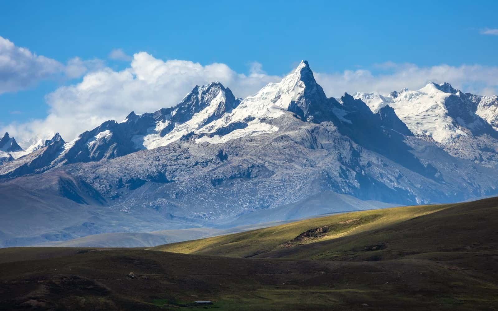
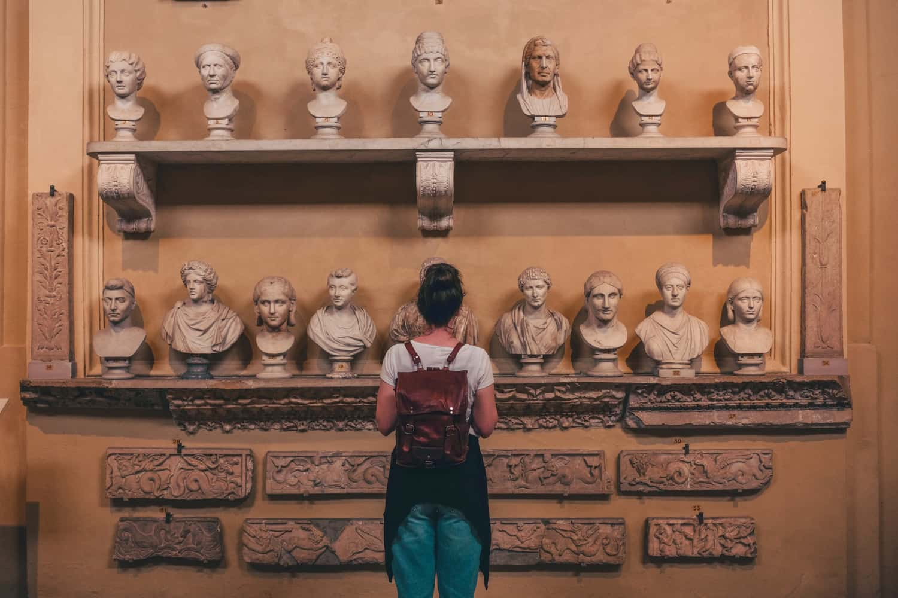

Nueva
Innovación y Desarrollo Social
5 años · 10 ciclos
Diseña y pone a prueba intervenciones sociales con investigación y herramientas de gestión.
Ver información de la carrera
La facultad reúne carreras que estudian la sociedad desde distintos ángulos: la vida cotidiana, el gobierno, la economía, los vínculos con el mundo y el diseño de proyectos con comunidades de Áncash.
5 años · 10 ciclos, presencial en Huaraz.
5 años · 10 ciclos
Diseña y pone a prueba intervenciones sociales con investigación y herramientas de gestión.
Ver información de la carrera
5 años · 10 ciclos
Estudia la diversidad cultural con etnografía y trabajo de campo en Áncash.
Ver información de la carrera5 años · 10 ciclos
Analiza desigualdades, trabajo y ciudad con encuestas y entrevistas.
Ver información de la carrera5 años · 10 ciclos
Sigue gobiernos locales, presupuestos y participación ciudadana en Áncash.
Ver información de la carrera5 años · 10 ciclos
Lee precios, empleo, agricultura de valle y turismo de montaña.
Ver información de la carrera5 años · 10 ciclos
Estudia cooperación, migraciones y el vínculo de la sierra con el mundo.
Ver información de la carreraElige una pestaña.
5 años · 10 ciclos · Presencial en Huaraz
Esta carrera forma gente que toma un problema social concreto —un trámite que nadie entiende, un plan de riego que no se usa, un albergue que no abre— y lo trabaja con investigación, diseño de una respuesta pequeña y prueba con las personas involucradas. Combina ciencias sociales con herramientas de gestión de proyectos y con medios digitales para registrar, mapear y devolver resultados.
Quien egresa puede describir un problema con datos y con voces de una asamblea, una encuesta corta, un archivo municipal o una entrevista en quechua o en castellano. Arma un cronograma, un presupuesto sencillo y un equipo, y explica por escrito y en una reunión qué se va a hacer y qué no. No sale “a cambiar el mundo”: sale a investigar con cuidado, a coordinar un proyecto y a devolver lo encontrado a la comunidad, al gobierno local o a una organización.
Competencias
Las prácticas y el trabajo de campo se hacen con municipalidades, organizaciones y comunidades del Callejón de Huaylas: se observa, se entrevista y se prueba una respuesta acotada, no un plan de escritorio.
¿Por qué estudiarla en Huaraz? Porque aquí se cruzan ciudad, valle y Cordillera Blanca: agua y glaciares, turismo, empleo y gestión de riesgos. Hay instituciones a escala humana —gobiernos distritales, comités de usuarios, escuelas— donde un proyecto estudiantil se puede seguir de verdad. El quechua no es un adorno: es lengua de entrevista, de archivo y de devolución.
Proyectos del estudiante
Los ciclos I a IV son de formación común de la facultad.
| Ciclo | Cursos |
|---|---|
| I | Introducción a las Ciencias Sociales; Comunicación oral y escrita; Territorio andino y sociedad; Taller de lectura académica |
| II | Investigación Social I; Estadística descriptiva; Historia social del Perú; Quechua I para ciencias sociales |
| III | Tecnología y Sociedad; Teoría social; Economía de la región; Métodos cualitativos |
| IV | Estadística inferencial; Políticas públicas locales; Comunicación comunitaria; Electivo de facultad |
| V | Innovación Social; Gestión de Proyectos I; Investigación Social II; Práctica de campo |
| VI | Gestión de Proyectos II; Sistemas de información social; Diseño de intervenciones; Electivo de carrera |
| VII | Evaluación de programas sociales; Taller de prototipos; Seminario de desarrollo territorial; Comunicación de resultados |
| VIII | Laboratorio de intervenciones; Gestión de equipos; Ética del trabajo aplicado; Electivo |
| IX | Seminario de tesis I; Práctica preprofesional I; Taller de proyecto aplicado; Métodos de evaluación |
| X | Seminario de tesis II; Práctica preprofesional II; Proyecto Final; Devolución a la comunidad |
Más información
Coordinación de la carrera: innovacion@gmail.com · +51 936 623 658, anexo 21
Pedir el plan de estudios de esta carrera5 años · 10 ciclos · Presencial en Huaraz
La Antropología se ocupa de cómo las personas organizan el parentesco, el ritual, la memoria y el trabajo cotidiano, en caseríos de altura, anexos del valle y barrios de Huaraz. El oficio central es la etnografía: convivir un tiempo, observar, preguntar y escribir lo visto con cuidado, en quechua o en castellano según hable cada casa.
Quien egresa puede armar un cuaderno de campo, una genealogía y un relato claro de un conflicto por tierras, una fiesta patronal o un trámite de patrimonio. Distingue lo que la gente dice de lo que hace, devuelve el texto a quienes participaron y no confunde un pueblo con un paisaje.
Competencias
Las prácticas se hacen en comunidades del Callejón de Huaylas y en barrios de Huaraz: se pide permiso, se convive por periodos cortos y se entrega un informe a quienes recibieron al o a la estudiante.
¿Por qué estudiarla en Huaraz? Porque a pocas horas hay anexos de altura, pueblos de valle y una ciudad que crece sobre andenes y huaycos. El patrimonio no es solo ruina: es fiesta, idioma y reclamo. Estudiar aquí permite volver al mismo lugar en varios ciclos y ver cómo cambia un conflicto, no solo fotografiarlo una vez.
Los ciclos I a IV son de formación común de la facultad.
| Ciclo | Cursos |
|---|---|
| I | Introducción a las Ciencias Sociales; Comunicación oral y escrita; Territorio andino y sociedad; Taller de lectura académica |
| II | Investigación Social I; Estadística descriptiva; Historia social del Perú; Quechua I para ciencias sociales |
| III | Tecnología y Sociedad; Teoría social; Economía de la región; Métodos cualitativos |
| IV | Estadística inferencial; Políticas públicas locales; Comunicación comunitaria; Electivo de facultad |
| V | Etnografía I; Parentesco y organización social; Quechua II para trabajo de campo; Práctica etnográfica |
| VI | Ritual, fiesta y memoria; Patrimonio cultural andino; Métodos visuales; Electivo de carrera |
| VII | Conflictos socioambientales; Antropología de la montaña; Archivo y oralidad; Seminario de lectura etnográfica |
| VIII | Antropología aplicada; Territorio y comunidades; Ética de la investigación en campo; Electivo |
| IX | Seminario de tesis I; Práctica preprofesional I; Taller de escritura etnográfica; Quechua III (entrevista y devolución) |
| X | Seminario de tesis II; Práctica preprofesional II; Tesis o proyecto etnográfico; Devolución a la comunidad |
Más información
Coordinación de la carrera: antropologia@gmail.com · +51 936 623 658, anexo 31
Pedir el plan de estudios de esta carrera5 años · 10 ciclos · Presencial en Huaraz
La Sociología pregunta quién manda, quién trabaja, quién estudia y quién se queda sin lote cuando Huaraz crece. Mira desigualdades de clase, género y origen, la escuela, el empleo y la familia, con encuestas, entrevistas y datos del municipio, no con opiniones sueltas.
Quien egresa puede diseñar un cuestionario corto, leer una tabla y escribir un informe que una oficina municipal o un colegio pueda usar. Sabe cuándo hace falta contar y cuándo hace falta sentarse a conversar, y no presenta a “los jóvenes” o “los migrantes” como un bloque único.
Competencias
Las prácticas se hacen en colegios, mercados, juntas vecinales y oficinas municipales de Huaraz y de distritos cercanos: se aplica una encuesta corta o un set de entrevistas y se entrega el resultado a quien abrió el espacio.
¿Por qué estudiarla en Huaraz? Porque la ciudad crece rápido entre el valle y la cordillera: llega gente de otros distritos, sube el precio del lote y cambian los colegios. Aquí se puede caminar un barrio, volver al semestre siguiente y medir si el agua llegó o no, sin diluir el problema en una estadística nacional.
Los ciclos I a IV son de formación común de la facultad.
| Ciclo | Cursos |
|---|---|
| I | Introducción a las Ciencias Sociales; Comunicación oral y escrita; Territorio andino y sociedad; Taller de lectura académica |
| II | Investigación Social I; Estadística descriptiva; Historia social del Perú; Quechua I para ciencias sociales |
| III | Tecnología y Sociedad; Teoría social; Economía de la región; Métodos cualitativos |
| IV | Estadística inferencial; Políticas públicas locales; Comunicación comunitaria; Electivo de facultad |
| V | Estructura social y desigualdad; Sociología del trabajo; Encuesta social I; Práctica de campo urbano |
| VI | Educación y movilidad; Familia y géneros; Entrevista y grupos; Electivo de carrera |
| VII | Sociología urbana de Huaraz; Migración y ciudad; Análisis de datos sociales; Seminario de teoría contemporánea |
| VIII | Políticas sociales; Sociología de la vivienda; Taller de informe sociológico; Electivo |
| IX | Seminario de tesis I; Práctica preprofesional I; Encuesta social II; Ética de la investigación sociológica |
| X | Seminario de tesis II; Práctica preprofesional II; Tesis o proyecto sociológico; Devolución de resultados |
Más información
Coordinación de la carrera: sociologia@gmail.com · +51 936 623 658, anexo 32
Pedir el plan de estudios de esta carrera5 años · 10 ciclos · Presencial en Huaraz
La carrera sigue cómo se toma una decisión pública en Áncash: quién arma el presupuesto de un distrito, quién habla en una audiencia, qué hace un partido entre elecciones y cómo llega —o no llega— un acuerdo de consejo municipal. El objeto de estudio es el gobierno cercano: regional, provincial y distrital, no un esquema abstracto de “el Estado”.
Quien egresa puede leer una ordenanza, un acta de consejo y un padrón de participantes de presupuesto participativo. Prepara una nota breve para una gerencia, observa una asamblea sin tomar partido en voz alta y explica por escrito qué se votó, qué quedó pendiente y quién quedó fuera de la sala.
Competencias
Las prácticas se hacen en municipalidades distritales y provinciales del Callejón de Huaylas, en oficinas de participación y en sesiones de consejo abiertas al público: se observa, se lee el expediente y se entrega una nota a la oficina que recibió al o a la estudiante.
¿Por qué estudiarla en Huaraz? Porque aquí el gobierno cabe en una sala: un distrito de pocos miles de personas, un presupuesto que se discute en voz alta y un consejo que se puede seguir ciclo a ciclo. No hace falta imaginarse “la política”: se puede sentar en la última fila y ver quién pide la palabra.
Los ciclos I a IV son de formación común de la facultad.
| Ciclo | Cursos |
|---|---|
| I | Introducción a las Ciencias Sociales; Comunicación oral y escrita; Territorio andino y sociedad; Taller de lectura académica |
| II | Investigación Social I; Estadística descriptiva; Historia social del Perú; Quechua I para ciencias sociales |
| III | Tecnología y Sociedad; Teoría social; Economía de la región; Métodos cualitativos |
| IV | Estadística inferencial; Políticas públicas locales; Comunicación comunitaria; Electivo de facultad |
| V | Gobierno regional y municipal; Presupuesto participativo; Partidos y representación; Práctica de observación institucional |
| VI | Políticas públicas I; Participación ciudadana; Derecho público local; Electivo de carrera |
| VII | Elecciones y sistemas electorales; Gestión de gabinetes locales; Taller de audiencia pública; Seminario de teoría política |
| VIII | Políticas públicas II; Conflicto y negociación institucional; Ética pública; Electivo |
| IX | Seminario de tesis I; Práctica preprofesional I; Taller de informe de políticas; Métodos de evaluación institucional |
| X | Seminario de tesis II; Práctica preprofesional II; Tesis o proyecto de gobierno; Devolución a la institución |
Más información
Coordinación de la carrera: cienciapolitica@gmail.com · +51 936 623 658, anexo 33
Pedir el plan de estudios de esta carrera5 años · 10 ciclos · Presencial en Huaraz
La Economía de esta facultad parte del precio de la papa en el mercado de Huaraz, del jornal en temporada de trekking y del costo de llevar agua a un lote nuevo. Estudia cómo se sostiene un hogar y un distrito: agricultura de valle, turismo de montaña, empleo temporal y lo que queda cuando baja la temporada.
Quien egresa puede armar una serie simple de precios, leer una ficha de costos de un productor y escribir un informe que una municipalidad o una asociación de comerciantes pueda usar. No promete “crecer la economía”: cuenta qué se produce, a cuánto se vende y quién se queda sin trabajo en mayo.
Competencias
Las prácticas se hacen en mercados, ferias, asociaciones de productores y oficinas municipales de desarrollo económico: se anotan precios, se conversa con vendedoras y se entrega el cuadro a quien abrió el espacio.
¿Por qué estudiarla en Huaraz? Porque en pocas cuadras se cruza el mercado mayorista, la calle de agencias de trekking y el paradero de combis del valle. Se puede volver cada ciclo a los mismos puestos y ver si el kilo subió, si el jornal cambió y si la feria dominical sigue llena.
Los ciclos I a IV son de formación común de la facultad.
| Ciclo | Cursos |
|---|---|
| I | Introducción a las Ciencias Sociales; Comunicación oral y escrita; Territorio andino y sociedad; Taller de lectura académica |
| II | Investigación Social I; Estadística descriptiva; Historia social del Perú; Quechua I para ciencias sociales |
| III | Tecnología y Sociedad; Teoría social; Economía de la región; Métodos cualitativos |
| IV | Estadística inferencial; Políticas públicas locales; Comunicación comunitaria; Electivo de facultad |
| V | Microeconomía regional; Agricultura de valle; Precios y mercados locales; Práctica de campo económico |
| VI | Macroeconomía aplicada; Turismo de montaña; Empleo y salarios; Electivo de carrera |
| VII | Evaluación de políticas económicas; Cuentas distritales; Taller de costos y presupuestos; Seminario de economía andina |
| VIII | Comercio interno y ferias; Economía del agua; Ética de la medición; Electivo |
| IX | Seminario de tesis I; Práctica preprofesional I; Taller de informe económico; Métodos cuantitativos II |
| X | Seminario de tesis II; Práctica preprofesional II; Tesis o proyecto económico; Devolución de resultados |
Más información
Coordinación de la carrera: economia@gmail.com · +51 936 623 658, anexo 34
Pedir el plan de estudios de esta carrera5 años · 10 ciclos · Presencial en Huaraz
Las Relaciones Internacionales, vistas desde Huaraz, no empiezan en una embajada: empiezan en un convenio que llega a un glaciar, en una familia con hijas e hijos en el extranjero, en un cargamento de palta que sale del valle o en un proyecto de cooperación que abre oficina por dos años. La carrera pregunta qué entra a la sierra, qué sale y quién firma el papel.
Quien egresa puede leer un convenio, un informe de cooperación y una nota de migración. Resume qué promete un organismo, qué pide a cambio y qué queda en el distrito cuando se va el equipo. Escribe en castellano claro y distingue un acuerdo vinculante de una carta de intención.
Competencias
Las prácticas se hacen en oficinas regionales de cooperación, en organizaciones que ejecutan convenios y en archivos de proyectos ya cerrados: se lee el expediente, se visita el lugar del convenio y se entrega un resumen a quien custodia los papeles.
¿Por qué estudiarla en Huaraz? Porque la Cordillera Blanca atrae fondos, turistas y equipos técnicos, y al mismo tiempo hay distritos con gente trabajando en otras regiones y otros países. Desde aquí se ve el hilo entre un acuerdo firmado lejos y una obra, un albergue o un censo de migrantes que sí se toca con la mano.
Los ciclos I a IV son de formación común de la facultad.
| Ciclo | Cursos |
|---|---|
| I | Introducción a las Ciencias Sociales; Comunicación oral y escrita; Territorio andino y sociedad; Taller de lectura académica |
| II | Investigación Social I; Estadística descriptiva; Historia social del Perú; Quechua I para ciencias sociales |
| III | Tecnología y Sociedad; Teoría social; Economía de la región; Métodos cualitativos |
| IV | Estadística inferencial; Políticas públicas locales; Comunicación comunitaria; Electivo de facultad |
| V | Cooperación internacional; Migraciones andinas; Historia diplomática del Perú; Práctica de archivo internacional |
| VI | Comercio exterior y sierra; Cambio climático y diplomacia; Organismos y convenios; Electivo de carrera |
| VII | Fronteras y movilidad; Taller de nota diplomática; Cooperación descentralizada; Seminario de política exterior |
| VIII | Derechos humanos y movilidad; Vínculos sierra-mundo; Ética de la cooperación; Electivo |
| IX | Seminario de tesis I; Práctica preprofesional I; Taller de informe de cooperación; Métodos de seguimiento de convenios |
| X | Seminario de tesis II; Práctica preprofesional II; Tesis o proyecto internacional; Devolución a la institución |
Más información
Coordinación de la carrera: internacionales@gmail.com · +51 936 623 658, anexo 35
Pedir el plan de estudios de esta carrera